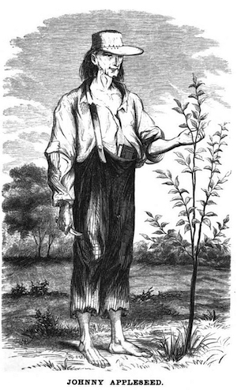

The popular image is of Johnny Appleseed spreading apple seeds randomly, everywhere he went. In fact, he planted nurseries rather than orchards, built fences around them to protect them from livestock, left the nurseries in the care of a neighbor who sold trees on shares, and returned every year or two to tend the nursery. His first nursery was planted on the bank of Brokenstraw Creek, south of Warren, Pennsylvania. Next, he seems to have moved to Venango County along the shore of French Creek,[8] but many of these nurseries were located in the Mohican area of north-central Ohio. This area included the towns of Mansfield, Lisbon, Ohio, Lucas, Perrysville, and Loudonville.
According to Harper’s New Monthly Magazine, toward the end of his career, he was present when an itinerant missionary was exhorting an open-air congregation in Mansfield, Ohio. The sermon was long and severe on the topic of extravagance, because the pioneers were buying such indulgences as calico and imported tea. “Where now is there a man who, like the primitive Christians, is traveling to heaven barefooted and clad in coarse raiment?” the preacher repeatedly asked until Johnny Appleseed, his endurance worn out, walked up to the preacher, put his bare foot on the stump that had served as a podium, and said, “Here’s your primitive Christian!” The flummoxed sermonizer dismissed the congregation.
Wilkes-Barre area
Practicied nurseryman craft, late 1790s